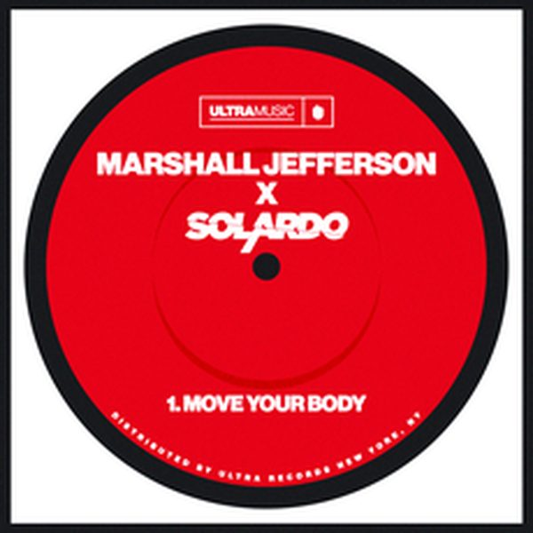

← Tutte le puntate
Crossover #166.
Data di uscita Il radioshow
Dove
Radio WowFM, Emilia-Romagna · il lunedì alle 14
Radio Super SoundFM, Sardegna · il sabato
Stardust Radioweb
I 24 dischi
 1
La SerenataThe Shooters
1
La SerenataThe Shooters
 2
MiracleCalvin Harris
2
MiracleCalvin Harris

3 Move Your BodySolardo 4
Forget YouLumX, Alida
4
Forget YouLumX, Alida
 5
To The BeatFriendz By Chance & Redeem
5
To The BeatFriendz By Chance & Redeem
 6
TinaVintage Culture, Meca, Bhaskar, The Vic
6
TinaVintage Culture, Meca, Bhaskar, The Vic
 7
FirewalkMorgan Page
7
FirewalkMorgan Page
 8
LorenaJoris Delacroix
9
Disappear (Andrea Oliva Remix)Nico De Andrea
8
LorenaJoris Delacroix
9
Disappear (Andrea Oliva Remix)Nico De Andrea
 10
Turn Off The LightEphemere
10
Turn Off The LightEphemere
 11
AcidDjeau
11
AcidDjeau
 12
Lucky OnesDon Diablo
12
Lucky OnesDon Diablo
 13
Pretty Little LiesDavid Puentez
13
Pretty Little LiesDavid Puentez
 14
BreezerMadison Mars
14
BreezerMadison Mars
 15
After MidnightLucas & Steve, Yves V
15
After MidnightLucas & Steve, Yves V
 16
Creepin' (Nico Zandolino Bootleg)Metro Boomin, The Weeknd, 21 Savage
16
Creepin' (Nico Zandolino Bootleg)Metro Boomin, The Weeknd, 21 Savage
 17
Take Me BackDan:Ros
17
Take Me BackDan:Ros
 18
No ReasonThe Chemical Brothers
18
No ReasonThe Chemical Brothers
 19
La VidaHakes
19
La VidaHakes
 20
Drugs From Amsterdam (Armand Van Helden Remix)Mau P
20
Drugs From Amsterdam (Armand Van Helden Remix)Mau P
 21
Just Be GoodWasabi
21
Just Be GoodWasabi
 22
Talkin' GoodJohan S, Oliver Knight
22
Talkin' GoodJohan S, Oliver Knight
 23
Come TogetherÖwnboss, DJ Glen
23
Come TogetherÖwnboss, DJ Glen
 24
MadJulio Navas, Gustavo Bravetti
24
MadJulio Navas, Gustavo Bravetti
La tracklist
- 1 La Serenata The Shooters Universal Music Italia
- 2 Miracle Calvin Harris Columbia
- 3 Move Your Body Solardo Ultra Records
- 4 Forget You LumX, Alida GEKAI
- 5 To The Beat Friendz By Chance & Redeem SKINK
- 6 Tina Vintage Culture, Meca, Bhaskar, The Vic Higher Ground
- 7 Firewalk Morgan Page Armada Music
- 8 Lorena Joris Delacroix Armada Music
- 9 Disappear (Andrea Oliva Remix) Nico De Andrea Armada Music
- 10 Turn Off The Light Ephemere Hexagon
- 11 Acid Djeau Hexagon
- 12 Lucky Ones Don Diablo Hexagon
- 13 Pretty Little Lies David Puentez Spinnin' Records
- 14 Breezer Madison Mars Spinnin' Records
- 15 After Midnight Lucas & Steve, Yves V Spinnin' Records
- 16 Creepin' (Nico Zandolino Bootleg) Metro Boomin, The Weeknd, 21 Savage Republic Records
- 17 Take Me Back Dan:Ros I Am House (Music Plant Group)
- 18 No Reason The Chemical Brothers EMI
- 19 La Vida Hakes Black Lizard Records
- 20 Drugs From Amsterdam (Armand Van Helden Remix) Mau P Island Records UK / Republic Records / Virgin Records Germany
- 21 Just Be Good Wasabi ERASE RECORDS
- 22 Talkin' Good Johan S, Oliver Knight Toolroom Records
- 23 Come Together Öwnboss, DJ Glen Musical Freedom
- 24 Mad Julio Navas, Gustavo Bravetti Fresco Records / Mentes Inquietas S.L